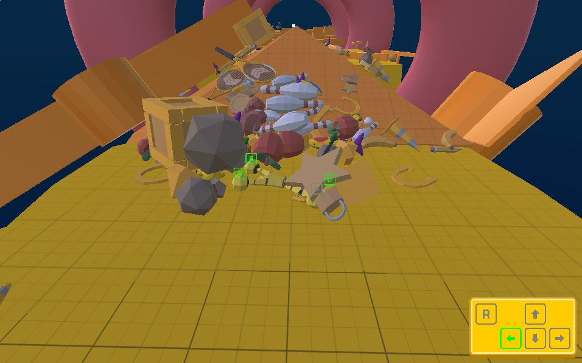
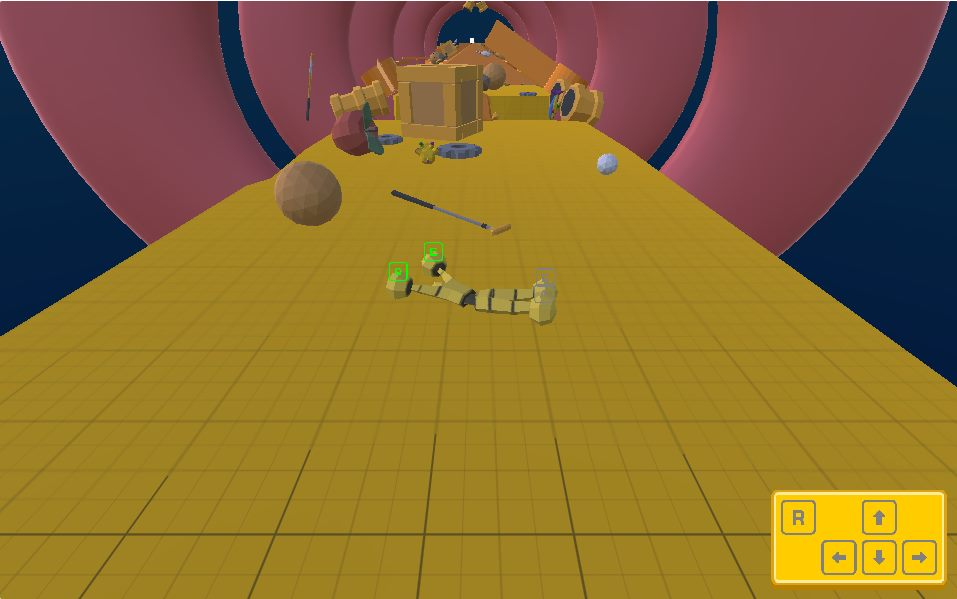
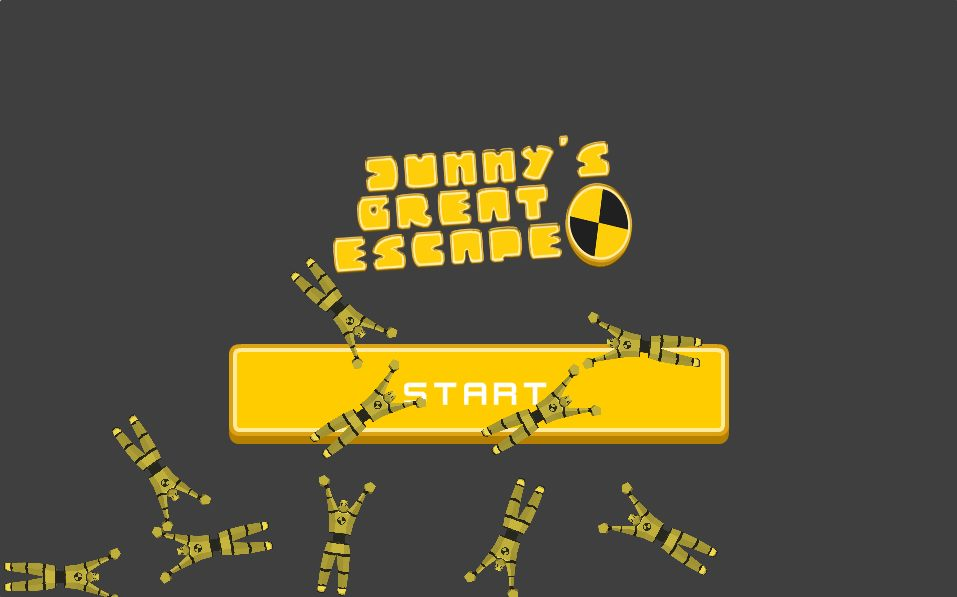

Dummy's Great Escape
Ragdoll, którym sterujesz każdą kończyną osobno. Lepkie powierzchnie, podstępne przeszkody i łamigłówki w duchu Human Fall Flat i Chained Together. Działa w przeglądarce.
- Moja rola
- Programista Unity
- Zespół
- 2 osoby
- Produkcja
- 6 miesięcy
- Ocena pracy
- 5

Moja rola
- System fizyki ragdollPostać w pełni fizyczna, a mimo to sterowalna.
- Sterowanie kończynamiPrecyzyjna kontrola każdej kończyny osobno.
- Cały kod gryWszystkie systemy i logika, od fizyki po interakcje z przeszkodami.
Podział w duecie: ja odpowiadałem za całą fizykę i kod, druga osoba za modele, oprawę wizualną, level design i przeszkody.
Wyzwanie: sterowalny ragdoll
- Problem
- Ragdoll z natury robi, co chce fizyka. Gra wymagała, żeby gracz mógł nim precyzyjnie sterować, kończyna po kończynie.
- Rozwiązanie
- Zamiast sztywnego tułowia postać ma w miejscu brzucha joint, więc może się zginać jak prawdziwe ciało. Każdą kończyną sterujesz osobno: klawisz wybiera kończynę, np. lewą rękę, a strzałki przykładają do niej siłę.
- Efekt
- Gra, w której sterowanie jest wyzwaniem, a nie przeszkodą. Działa w przeglądarce dzięki WebGL, a praca inżynierska dostała ocenę 5.

